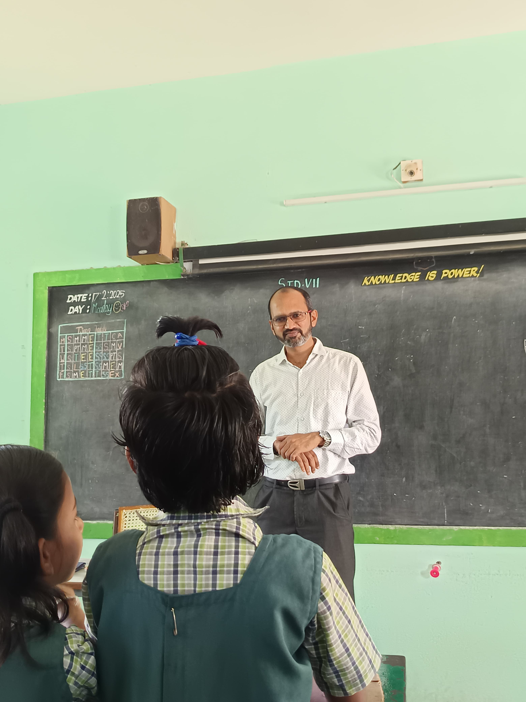

FOUNDER'S STORY
The Idea That Started It All
"Many children in rural government schools were attending regularly but struggling to truly understand what they were being taught."
— Founder, Kalvi40
In 2019, Prem Kumar Gokuladasan - an engineer and MBA professional with 19 years of global experience - returned from Europe with one mission: to use technology to solve the single biggest barrier holding back rural Tamil Nadu children: the absence of quality, accessible education.
Kalvi40 was born from the simple belief that every child - regardless of where they are born - deserves access to learning that prepares them for life.